Galería
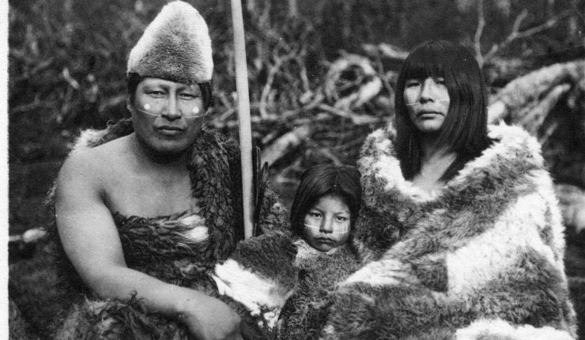
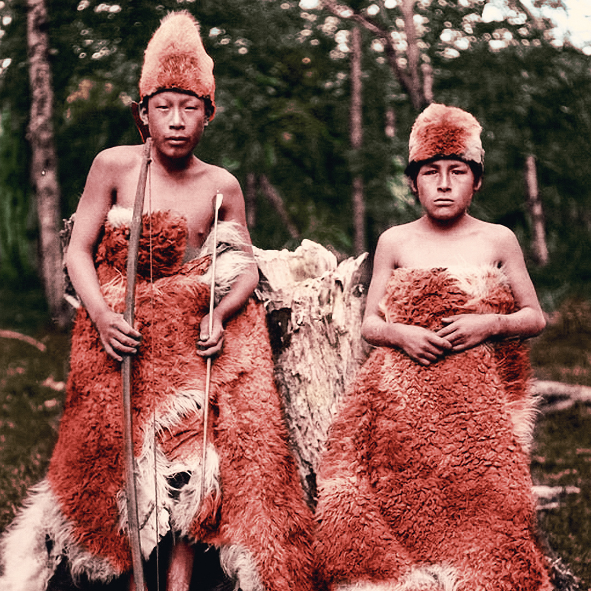
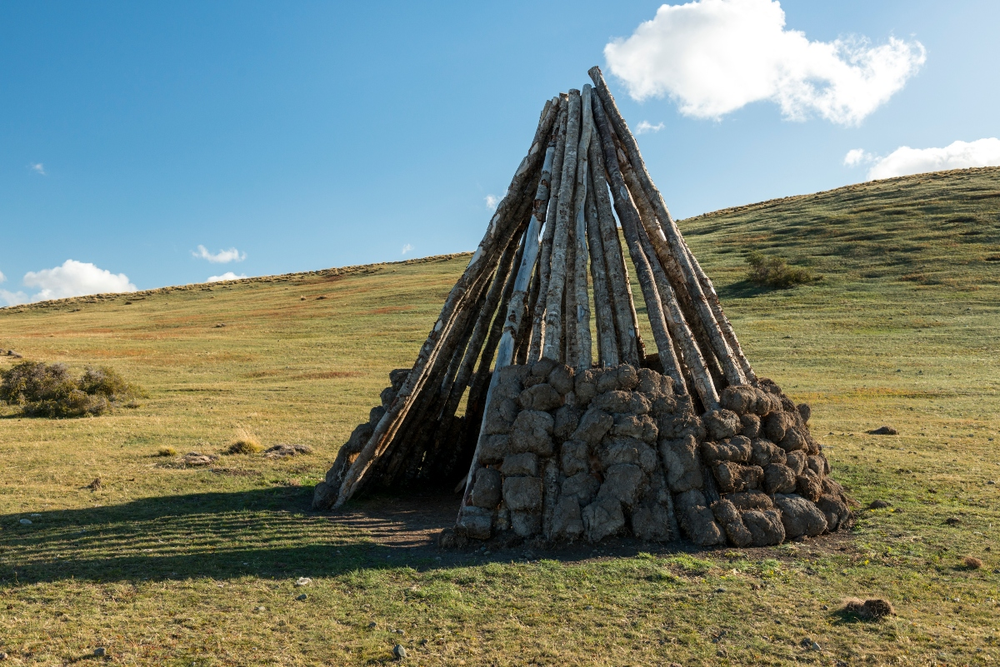
 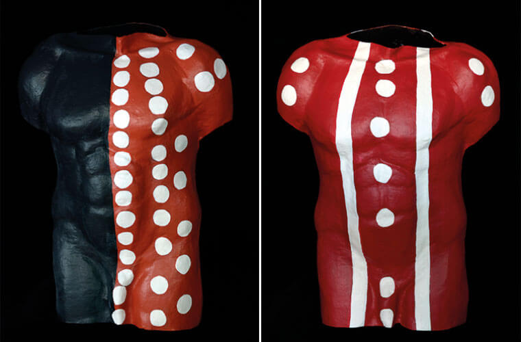
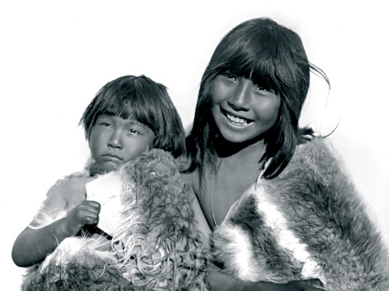
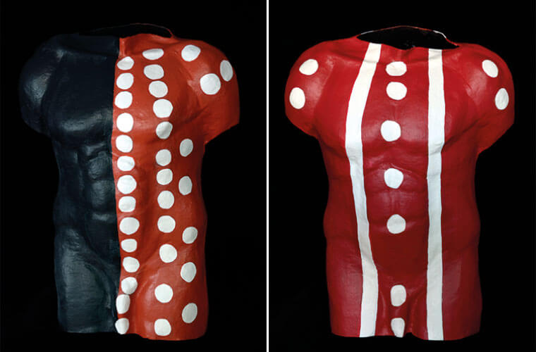
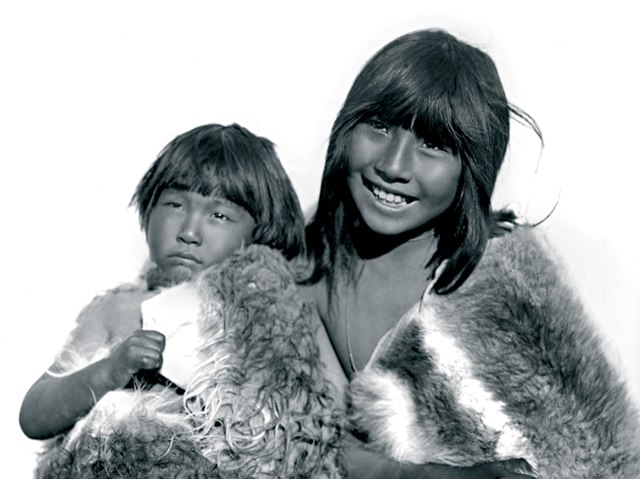
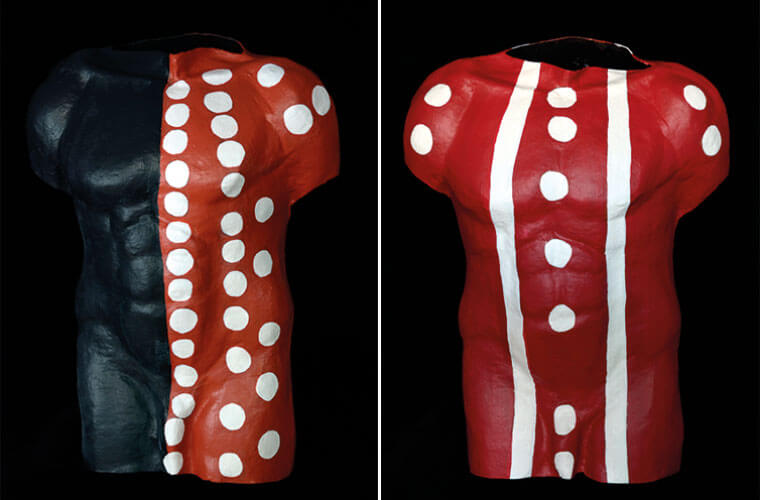
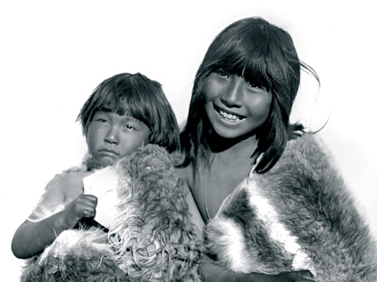
Explora su historia, costumbres, espiritualidad y el territorio que habitaron
Los Selk'nam u Onas fueron un pueblo indígena de la Isla Grande de Tierra del Fuego. Practicaban una vida nómada, conectados profundamente con la tierra, el cielo y los ciclos naturales. Fueron víctimas del genocidio en el siglo XIX, pero su legado cultural sigue vivo.
Su economía estaba basada en la caza del guanaco y la recolección de plantas silvestres, frutos y mariscos. Utilizaban arcos y flechas hechos de madera y piedra. La subsistencia estaba organizada en torno a grupos familiares que se desplazaban estacionalmente.
Las viviendas tradicionales de los Selk'nam, también conocidos como Onas, eran "paravientos" o "tiendas" construidas con palos, ramas y cueros de guanaco o lobo marino. Eran fáciles de desmontar y transportar, lo que facilitaba su estilo de vida nómada.
Vivían en las estepas frías, montañas y costas de Tierra del Fuego. Poseían un conocimiento profundo de su ecosistema: sabían dónde encontrar agua, cuándo migraban los animales y cómo orientarse sin mapas.
La cultura Selk'nam representa un patrimonio invaluable de los pueblos originarios del extremo sur de América. Su cosmovisión, ceremonias, arte corporal y profundo vínculo con la naturaleza nos enseñan sobre formas de vida sostenibles y espirituales. Preservar su historia es fundamental para comprender la diversidad cultural de la humanidad y para honrar a quienes fueron injustamente silenciados.
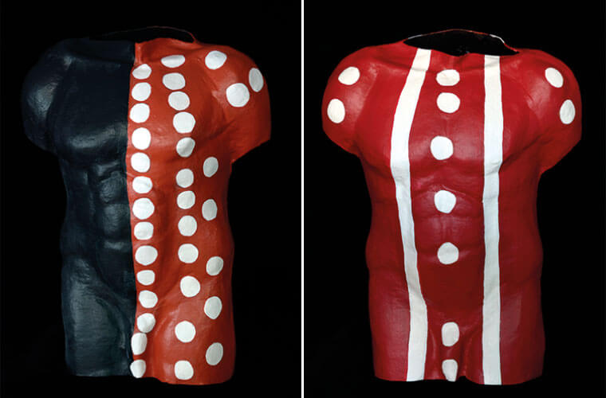
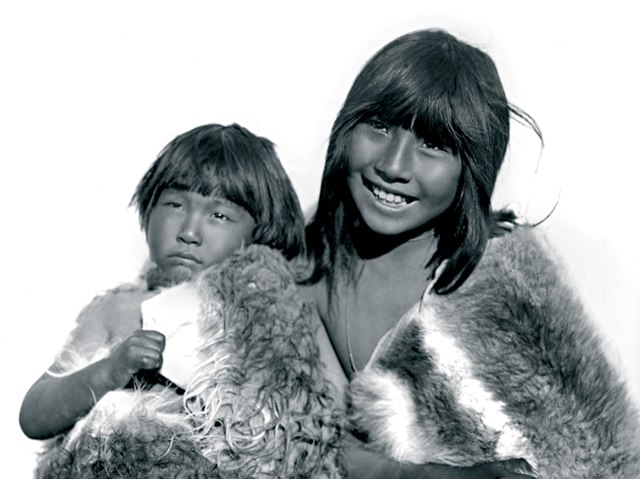
El pueblo Selk'nam habitaba principalmente la zona norte y centro de la Isla Grande de Tierra del Fuego (actual Argentina y Chile).
Visitá este artículo para profundizar más sobre su historia, lengua y cosmovisión.